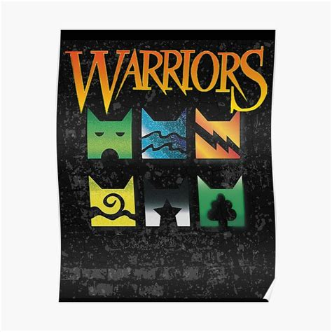

Contact

esther.choi009@gmail.com

I love playing with my cats!
Playing with my 2 cats, Crystal and Atom, is one of my favorite hobbies because it can be fun and relaxing for me, as well as the cats! (Crystal and Atom are black and white with pink noses.) It can also further develop a good relationship between my cats and I. Since the average cats live 12-15 years (around 58-76 human years), and some cats have even lived to over 30 (over 100 human years!), I can be sure that my cats and I will have great times together, because my cats are only 3 years old (or 28 in human age!). Whenever I leave my house and come back, my cats are always sitting near the front door, waiting for me and my family to come back. Even though the cats in the picture are not my cats, I think that those cats also enjoy time with their owners. Even though this hobby is not very educational, it can help you to calm your nerves the day before a test, or help you concentrate better. (It can sometimes distract, but only when you don't focus.) That is why this is a great hobby to have!
Click on the images to learn more about my inspiration.
This is the group of authors more commonly known as Erin Hunter, consisting of Victoria Holmes, Tui T. Sutherland, Kate Cary, and Cherith Baldry. This group of authors worked together to come up with the series Warriors, which got me thinking of getting cats of my own!
This is an image of the book series, Warriors, which was written by the authors shown above. It is based on cats, and is a fantasy story on the life of "clans" of wild cats living in different habitats. The images of the clans are shown above, as well as the logo for the series.